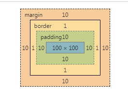
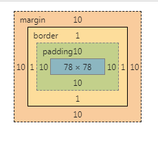

content-box,width和height计算时不包括边框和内边距
元素实际宽度 = width + padding（左右内边距大小） + border（左右边框大小）
元素实际高度 = height + padding（上下内边距大小） + border（上下边框大小）
我们设置的width和height属性实际上是元素的content内容区的宽度与高度
设置padding和border之后元素尺寸就会变大
border-box，width和height计算时内容区包括边框和内边距
元素content内容区宽度 = width - padding（左右内边距大小） - border（左右边框大小）
元素content内容区高度 = height - padding（上下内边距大小） - border（上下边框大小）
我们设置了width和height之后
元素的宽高就定下来了
设置padding与margin会使内容区变小
